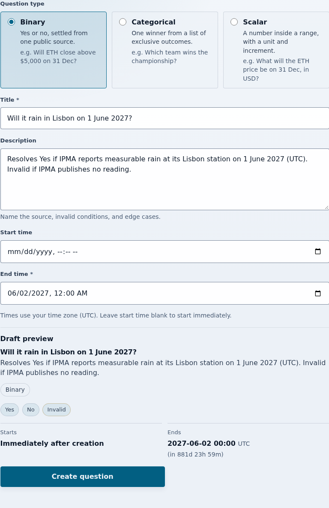
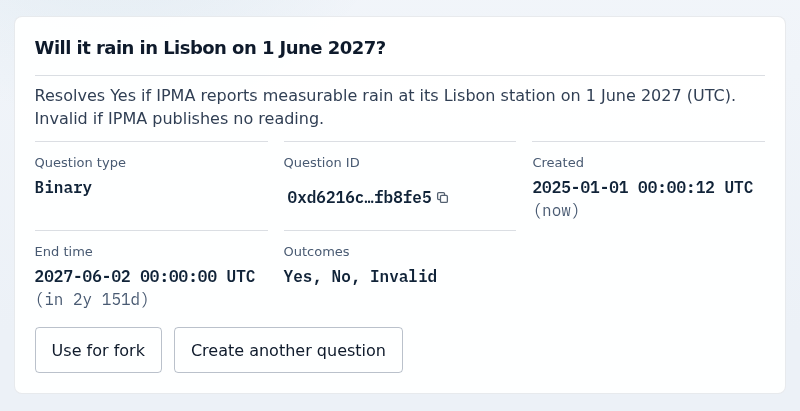
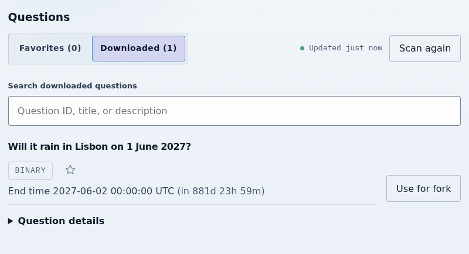

Tutorial
Your first Zoltar question
You will create a yes-or-no question in Zoltar's global registry and then find it again in the question browser. Every market and every fork starts from a question like this one.
Before you start
Zoltar is the base layer: it records questions and keeps the REP ledger of each universe. Zoltar and branching universes explains the model.
Run bun run app:serve:zoltar and open http://localhost:4153/?simulate=1&genesis=yes&simScenario=deployed. That browser-local simulator has the contracts deployed and no questions yet; the screenshots below come from it. It never reflects live chain state.
Write the question
- Select Create question and keep the Binary question type.
- Enter a Title, for example
Will it rain in Lisbon on 1 June 2027? - In Description, name the source and say when the answer is Invalid, for example
Resolves Yes if IPMA reports measurable rain at its Lisbon station on 1 June 2027 (UTC). Invalid if IPMA publishes no reading. - Enter an End time after the event. Leave Start time blank to start immediately.

A question cannot be edited after it is created, so check the preview before you submit.
Create it
Select Create question below the preview and confirm the transaction. The confirmation card shows the Question ID, the end time, and the Outcomes Yes, No, and Invalid.

Find it in the registry
- Select Browse questions.
- Select Discover questions. The browser scans the registry and lists your question under Downloaded.

That is a complete question. To put collateral behind a question, follow Your first security pool; on a live network you could choose Use a question ID there with this question's ID, while each simulator keeps its own chain. Use for fork instead starts a universe fork, which Zoltar and branching universes explains.